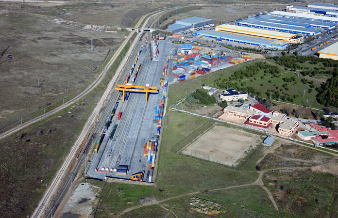
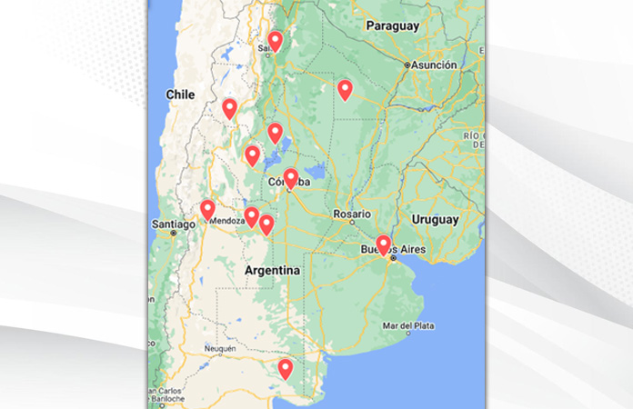

Los Puertos Secos en Argentina: un modelo logístico en desarrollo
El término “puerto seco” es un concepto poco utilizado en la opinión pública de nuestro país. ¿Cómo puede una terminal logística intermodal estar conectada con el comercio exterior estando lejos de nuestros mares y ríos? ¿Son eficientes estos nodos en un país de extensión territorial tan grande como el nuestro?

Para comenzar a indagar en ello, es necesario establecer al menos una definición sintética de lo que es un Puerto Seco:
suele denominarse así a un nodo intermodal situado en zonas no fluviales y marítimas, es decir lejos de cursos de agua
como ríos o las grandes extensiones de nuestro Mar Argentino.
Su particular denominación se debe a que combina distintos tipos de transporte en un mismo punto: camión, tren y
vinculación con las terminales portuarias se combinan en un mismo lugar a fin de agilizar buena cantidad de los
trámites por los que deben atravesar las mercaderías antes de embarcarse a su destino final, tales como el sellado
y la verificación de Aduana.
Al realizar estos trámites en el Puerto Seco, el proceso se agiliza y reduce los costos asociados en toda la cadena
logística. Por lo tanto, la consecuencia es que en este tipo de terminales todo está integrado: sector de oficinas
administrativas y de Aduana, estacionamiento para camiones, terminal ferroviaria, y depósitos de contenedores,
entre otros sectores de relevancia.
OTRAS VENTAJAS DE LOS PUERTOS SECOS:
1. Menor impacto en el medio ambiente gracias al transporte ferroviario involucrado entre los puertos secos y
la terminal de carga marítima o fluvial.
2. Descongestión de las terminales portuarias.
3. Interconexión: un solo puerto seco puede estar conectado con más de una terminal portuaria, pudiendo
direccionar la carga según conveniencia y destino.
4. Menor tiempo de armado de vuelos en el caso del transporte aéreo de cargas, debido a que la mercadería
a transportar llega a la terminal con una gran cantidad de pasos técnicos y administrativos ya realizados.
Principales puertos secos en Argentina en proyecto y en funcionamiento
-
Puerto seco de Recreo, Catamarca:
- Ubicación: Localidad de Recreo, La Paz, Catamarca.
- Estado: En proyecto.
- Descripción: Se trata de un proyecto para crear un centro logístico de tipo "puerto seco" en la ciudad de Recreo, en el extremo sudeste de la provincia de Catamarca, con el objetivo de transportar mercancías y productos provenientes del noroeste del país hacia Recreo y desde allí llevarlas por vía férrea hacia el puerto de Rosario, en la provincia de Santa Fe, y viceversa, siendo su principal objetivo disminuir los costos de transporte.
Este puerto seco se presentó como un Centro Logístico Internacional Polimodal (CLIP), una plataforma intermodal que combinará el transporte ferroviario, el terrestre y el marítimo, constituyendo una importante cadena de medios de transporte que facilitará la canalización de los flujos de mercancía. -
Puerto seco de La Rioja:
- Ubicación: Chamical, La Rioja.
- Estado: En proyecto.
- Descripción: Tanto el puerto seco proyectado en Recreo como el de Chamical en La Rioja serán parte del proyecto del Corredor Ferroviario Bioceánico NOA-CENTRO.
Este corredor se presenta como un proyecto clave para la activación de la economía en la región, y países como Chile y sur de Brasil principalmente.
El proyecto prevé dos centros logísticos o puertos de transferencias de carga, uno ubicado en el departamento Chamical, en La Rioja, y el otro en la localidad de Recreo, en La Paz, Catamarca, que se convertirán en nodos de concentración, transferencia y distribución de cargas.
En este sentido, la Vicegobernadora Florencia López explicó en 2021: “debemos establecer una zona franca o puerto seco en Chamical y de ahí salir por Catamarca hacia el Océano Pacífico para poder comercializar nuestras mercaderías en los países asiáticos". -
Puerto seco de Tinogasta, Catamarca:
- Ubicación: Tinogasta, Las Grutas, Catamarca.
- Estado: En proyecto.
- Descripción: Para la construcción del complejo binacional de Las Grutas, en Tinogasta, ya se firmó un convenio entre la provincia y el Ministerio de Transporte de la Nación para el financiamiento d el puerto seco.
Será parte del Corredor Ferroviario Bioceánico NOA-CENTRO con los puertos secos de Chamical, en La Rioja, y de Recreo, en La Paz, Catamarca. -
Puerto Seco en Salta:
- Ubicación: General Güemes, Salta.
- Estado: En proyecto.
- Descripción: Se encuentran realizándose las obras del Nodo Logístico Intermodal y Puerto Seco en General Güemes, las cuales comprenden la construcción de una Terminal Multimodal y el mejoramiento de vías del ramal C entre Metán-Güemes del Ferrocarril Belgrano.
En este sentido, se firmó un Convenio de Cogestión del Nodo Logístico Gral. Güemes, entre la provincia de Salta y el Ministerio de Transporte de la Nación, que permitirá optimizar la eficiencia logística de pequeños y medianos productores en un rango aproximado de 150 km, alcanzando departamentos tanto de Salta como de Jujuy. -
Puerto seco de Chaco:
- Ubicación: Zona de Pampa del Cielo, entre Las Breñas y Charata, Chaco.
- Estado: En proyecto.
- Descripción: La propuesta, en la cual están involucradas diversas entidades y Gobierno estaría ubicada en la zona de Pampa del Cielo, entre Las Breñas y Charata. Desde la Cámara de Comercio de esta ciudad, junto con la de Las Breñas, productores, acopiadores, Ministerio de Transporte de la Nación y gobierno provincial, se trabaja para la creación de este puerto seco en el sudoeste. -
Puerto Seco Idits Mendoza:
- Ubicación: Godoy Cruz, Mendoza.
- Estado: En funcionamiento.
- Descripción: Con una extensión de 12 hectáreas, Puerto Seco Idits cuenta con un beneficio estratégico por encontrarse dentro del área metropolitana Mendoza en particular y de la Provincia de Mendoza en general, dentro del Corredor Bioceánico Central, que integra conjuntamente con otros proyectos, una red de infraestructura y servicios complementarios al sector logístico, comercio exterior, transporte y productivo.
El Cono Sur es una península con presencia activa en los océanos Atlántico y Pacífico. El 17% de la carga que se mueve de un océano al otro se hace vía terrestre, donde Mendoza concentra alrededor del 66% de ese flujo.
El Paso Cristo Redentor se encuentra sobre el eje horizontal más relevante, desde el punto de vista comercial, de la Argentina y Chile, sobre el cual se concentran las ciudades, centros de consumo y de producción más significativos de ambos países. Esto ratifica la importancia estratégica que posee. -
Puerto seco de Córdoba:
- Ubicación: Córdoba Capital, Parque Industrial de la CaCEC.
- Estado: En funcionamiento.
- Descripción: Las empresas colocan sus productos en containers de las navieras internacionales (como Hamburg Sud, Cosco Shipping, Funcke Maritime, SouthAtlantic, entre otras con las que están cerrando acuerdos), estos son controlados y precintados por Aduana, listos para exportarse. De esta manera, se evitan pérdidas de iempo y costos en la aduana porteña, aumentando la competitividad.
Respecto del ferrocarril, los planes son a mediano plazo. Marcelo Olmedo, presidente de la Cámara de Comercio Exterior de Córdoba, asegura: “No estaríamos tan mal utilizando los bitrenes”, considerando los 700 km que separan Córdoba de Buenos Aires y el estado de la autopista.
• Datos:
- Superficie total 51.000 m2
- 17.000 m2 Zona Primaria Aduanera
- 5.000 m2 Depósito Fiscal
- 500 m2 Oficinas y Salas de Trabajo
- 6.000 m2 Playa para contenedores
- Depósito Nacional, oficinas de Organismos y Servicios vinculados, Salón de Usos Múltiples. -
Puerto seco ZAL de San Luis:
- Ubicación: Villa Mercedes, San Luis.
- Estado: En funcionamiento.
- Descripción: La Zona de Actividades Logísticas (ZAL) se encuentra estratégicamente ubicada sobre el eje principal del Corredor Bioceánico que une los principales puertos de Chile y Argentina y posee conexión directa con las Rutas Provinciales N° 55 y 2B (a Córdoba, La Pampa y la Patagonia). Con esta localización, tiene un alcance a más de 8 millones de habitantes en un radio de 500 Km, se proyecta como el principal Nodo de distribución del centro del país.
Cuenta con una plataforma equipada con instalaciones para el almacenaje, manipulación y distribución de productos. Esta Zona Franca concentra operadores y empresas de servicios relacionadas con el transporte nacional e internacional, on posibilidades de intercambio modal.
Los operadores pueden ser propietarios, inquilinos o simplemente usuarios de los edificios y equipamientos construidos en la plataforma, que incluyen almacenes, muelles de fraccionamiento y transferencia, oficinas, playas, talleres y áreas comerciales, entre otras dependencias. -
Puerto seco de San Luis Logística:
- Ubicación: San Luis Capital, San Luis.
- Estado: En funcionamiento.
- Descripción: San Luis Logística es un Polo Internacional de logística, creado por el Gobierno de San Luis para consolidar las ventajas competitivas y comparativas de todos los sectores productivos, brindando la infraestructura y servicios necesarios para la región.
Ofrece ventajas competitivas a través de la centralización de servicios en una misma plataforma logística, donde se ofrecen los beneficios e infraestructura a nivel internacional a través de las siguientes unidades de negocios: Zonas de Actividades Logísticas, plataforma multimodal de cargas; Alfazal, Plan Integral Alfalfa San Luis; Ferrosal, nuevos corredores de logística intermodal; Agrosal, logística agropecuaria; Zona Primaria Aduanera, servicios integrales para el comercio internacional; Zona Franca, centro productivo con beneficios impositivos; Bitrenes Emabi, nuevo sistema de transporte carretero. -
Puerto seco de provincia de Buenos Aires:
- Ubicación: General Rodríguez, Buenos Aires.
- Estado: En proyecto.
- Descripción: En 2020, el gobierno municipal de General Rodríguez anunció la instalación de un puerto seco que permitirá darle un impulso a la industria de la región. El puerto seco funcionará en un predio de 92 hectáreas que es propiedad de la provincia de Buenos Aires y se encuentra ubicado sobre la Ruta 24, a 3 kilómetros de la Ruta 6, una vía interportuaria.
En este caso se optó por el desarrollo de un modelo mixto que combina la inversión del Estado con inversiones privadas. La inversión del Estado le va a permitir a Gral. Rodríguez incorporar una fuente de ingresos importante a través del cobro de tasas aduaneras. -
Puerto seco de General Conesa:
- Ubicación: General Conesa, Río Negro.
- Estado: En proyecto.
- Descripción: En 2021, la AFIP firmó un convenio con la Municipalidad de General Conesa para implementar un puerto seco en la localidad. El objetivo de la instalación y construcción de una Zona Operativa Aduanera es acercar las tareas de fiscalización y control propias de la Aduana al territorio para facilitar y simplificar la exportación de productos agropecuarios. Los principales beneficiarios de la medida serán los pequeños y medianos productores de cebolla para exportación de la zona.
El acuerdo fue rubricado por la titular del organismo, Mercedes Marcó del Pont, y por el Intendente municipal, Héctor Mario Leineker, perteneciente al Frente de Todos. Asimismo, informaron que la Municipalidad de General Conesa se comprometió a ceder un predio de su propiedad, que cuenta con un inmueble en el que se realizarán las tareas de control aduaneras. Asimismo, el municipio se hará cargo de la construcción de un tinglado destinado a empacar y almacenar. Este espacio permitirá aumentar considerablemente la producción.
